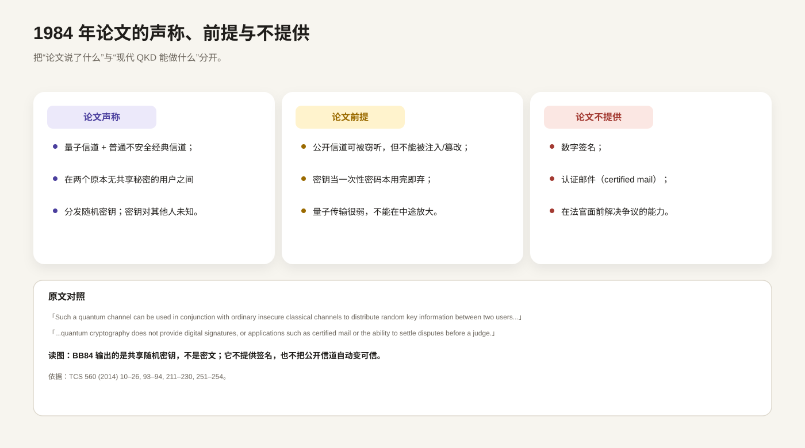
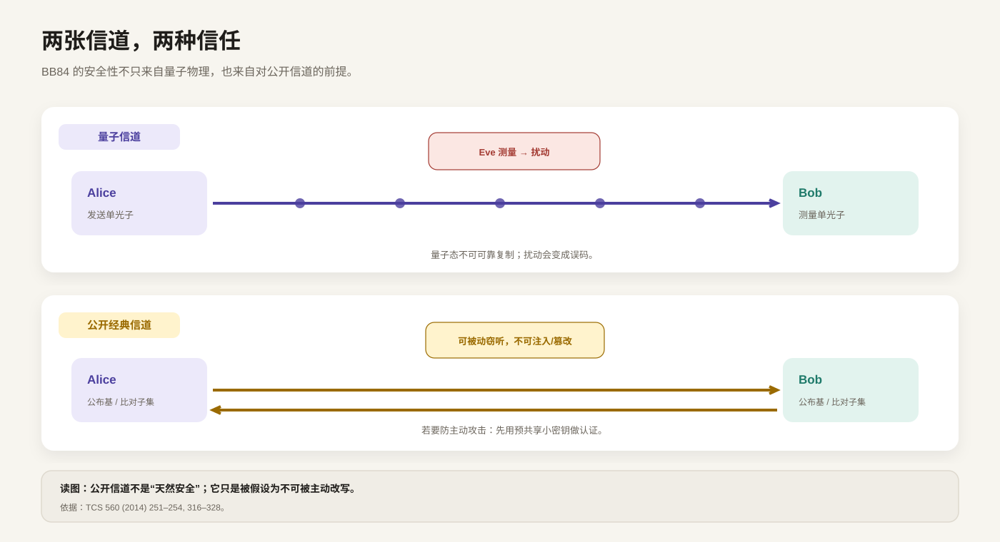
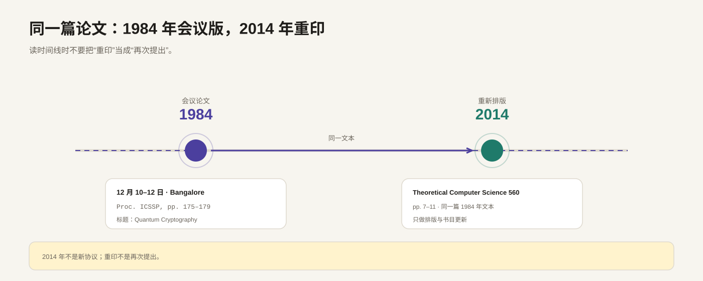

原理与机制
事件：BB84 论文发表（1984）（The BB84 Paper Published (1984)）。

为什么重要
论文的动因是：量子测量会扰动非正交态，因此窃听会留下痕迹。摘要写：「When elementary quantum systems, such as polarized photons, are used to transmit digital information, the uncertainty principle gives rise to novel cryptographic phenomena unachievable with traditional transmission media」；其中一种现象是「a communications channel on which it is impossible in principle to eavesdrop without a high probability of disturbing the transmission in such a way as to be detected」。论文进一步主张：「Such a quantum channel can be used in conjunction with ordinary insecure classical channels to distribute random key information between two users with the assurance that it remains unknown to anyone else, even when the users share no secret information initially.」。这三句把为什么限定为物理层的可检测扰动，不把它扩展成计算安全的证明。

应用与实例
论文把产出定位为一次性密码本的密钥或认证标签，而不是直接加密消息。它写：双方可「use these shared secret bits in the well-known way as a one-time pad to conceal the meaning of subsequent meaningful communications, or for other cryptographic applications (e.g.authentication tags) requiring shared secret random information」。同时明确边界：「quantum cryptography does not provide digital signatures, or applications such as certified mail or the ability to settle disputes before a judge」。因此该条目只记录论文提出的用途：密钥分发与认证标签；不把 BB84 写成签名、PKI 或通用加密协议。
边界与攻击面
论文的检测论证有明确前提。公开信道「assumed to be susceptible to eavesdropping but not to the injection or alteration of messages」；若攻击者能主动改公开消息，协议需要预先共享小密钥做认证：「The need for the public (non-quantum) channel in this scheme to be immune to active eavesdropping can be relaxed if Alice and Bob have agreed beforehand on a small secret key」。量子侧则用误码检测：Eve 全用 R 基拦截-重发时，「the eavesdropper measures and retransmits all intercepted photons in the rectilinear basis, thereby learning the correct polarizations of half the photons and inducing disagreements in 1/4」。所以能检测依赖抽样与认证，不是无条件保证。
历史与背景
重印本脚注把原载位置记作「This paper appeared originally on pages 175–179 of the Proceedings of the International Conference on Computers, Systems and Signal Processing」，并说明重印「exactly as it was in its original 1984 version, except for fresh typesetting」。这两句给出 1984 年会议论文集、第 175–179 页与 2014 年重印之间的关系；结合论文首页的会议行与起始页 175，该条目把事件断到 1984 年 12 月会议论文发表。2014 年是同一文本的排版重印，不是协议再次提出。

逐步示例与核验
事件时间线模型
背景 → 过程 → 结果 → 争议。背景写此前技术/制度；过程写可核参与者与时间；结果写后续标准、机器、课程或政策；争议写二手叙述与一手材料的差距。
参考出处
- Wikipedia search entry for BB84 论文发表（1984）. https://zh.wikipedia.org/w/index.php?search=BB84%20%E8%AE%BA%E6%96%87%E5%8F%91%E8%A1%A8%EF%BC%881984%EF%BC%89
- A Brief History of Cryptology and Cryptographic Algorithms (Dooley, Springer 2013). https://link.springer.com/book/10.1007/978-3-319-01628-3